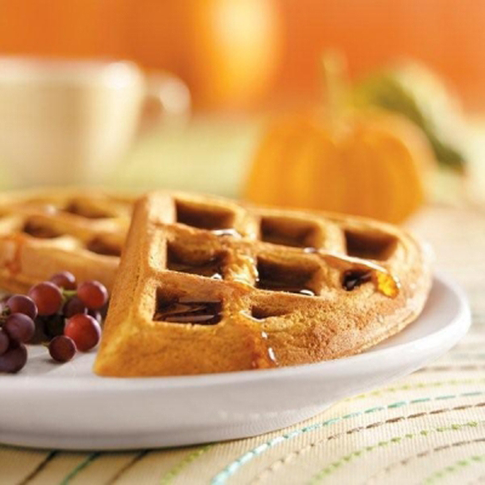

Pumpkin Waffles

Description
Nothing beats the smell of freshly baked
waffles on a cold wintery day.
Ingredients
- 1 cup all-purpose flour
- 1 teaspoon baking powder
- 1/2 teaspoon baking soda
- 1/4 teaspoon salt
- 3/4 teaspoon ground cinnamon
- 1/2 teaspoon ground ginger
- 1/8 teaspoon ground nutmeg
- 2 teaspoons canola oil
- 1 teaspoon molasses
- 1/4 cup canned pumpkin
- 1 cup buttermilk
- 1 large egg
- 2 tablespoons SPLENDA No Calorie
Sweetener, Granulated
- 1 1/2 cups maple syrup sweetened
with SPLENDA brand Sweetener
Steps
- Preheat waffle iron according to
manufacturer's directions; spray
lightly with vegetable cooking spray.
- Combine flour, baking powder, soda,
salt, cinnamon, ginger, and nutmeg in
a large bowl. Set aside.
- Combine oil, molasses, pumpkin and
buttermilk in a small bowl; set aside.
- Whisk together egg and SPLENDA Granulated
Sweetener until blended. Add buttermilk
mixture, whisking until blended. Add to dry
ingredients, stirring just until moistened.
- Pour batter into a hot waffle iron and
bake approximately 5 minutes*. Serve with maple
syrup.